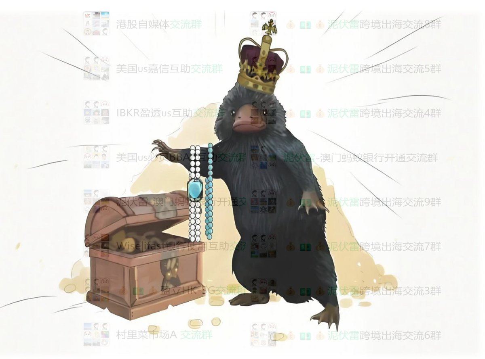

𝙉𝙚𝙡𝙤
@u7ed2x2
@Nicole_yang88 在Youtube看过你的视频，质量很高

泥伏雷闯关记
@Nicole_yang88
🚦停留 1 分钟认识下「泥伏雷闯关记」
在国内，如果不是抖音被封号，我本来也算个小头部博主；现在出海到 X，相当于从零重来。
我不讲金融知识、不教你炒股，我只做一件事：
🚪帮普通人打通全球金融通道🔑。
开户、收款、转账、出入金、跨境资金如何安全流转， https://t.co/TtDEskfJkd https://t.co/kQZ8sfuj0b